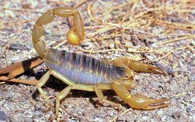
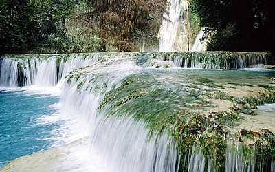

<!DOCTYPE html>
<html lang="ru">
<head>
  <meta charset="UTF-8">
  <meta name="viewport" content="width=device-width, initial-scale=1.0">
  <meta http-equiv="X-UA-Compatible" content="ie=edge">
  <title>Вертикальная прокрутка изображений с помощью JavaScript</title>
</head>
<body>
  <script>
var scrollerwidth='410px'
var scrollerheight='300px'
var pausebetweenimages=2000
//2000 miliseconds=2 seconds

var slideimages=new Array()
slideimages[0]='<a href="https://w3schoolsrus.github.io/" target=_"blank"></a>'
slideimages[1]='<a href="https://w3schoolsrus.github.io/" target=_"blank"></a>'
slideimages[2]='<a href="https://w3schoolsrus.github.io/" target=_"blank"></a>'
slideimages[3]='<a href="https://w3schoolsrus.github.io/" target=_"blank"></a>'
slideimages[4]='<a href="https://w3schoolsrus.github.io/" target=_"blank"></a>'

// Код ниже лучше не редактировать! //

var ie=document.all
var dom=document.getElementById

if (slideimages.length>2)
i=2
else
i=0

function move1(whichlayer){
tlayer=eval(whichlayer)
if (tlayer.top>0&&tlayer.top<=5){
tlayer.top=0
setTimeout("move1(tlayer)",pausebetweenimages)
setTimeout("move2(document.main.document.second)",pausebetweenimages)
return
}
if (tlayer.top>=tlayer.document.height*-1){
tlayer.top-=5
setTimeout("move1(tlayer)",50)
}
else{
tlayer.top=parseInt(scrollerheight)
tlayer.document.write(slideimages[i])
tlayer.document.close()
if (i==slideimages.length-1)
i=0
else
i++
}
}

function move2(whichlayer){
tlayer2=eval(whichlayer)
if (tlayer2.top>0&&tlayer2.top<=5){
tlayer2.top=0
setTimeout("move2(tlayer2)",pausebetweenimages)
setTimeout("move1(document.main.document.first)",pausebetweenimages)
return
}
if (tlayer2.top>=tlayer2.document.height*-1){
tlayer2.top-=5
setTimeout("move2(tlayer2)",50)
}
else{
tlayer2.top=parseInt(scrollerheight)
tlayer2.document.write(slideimages[i])
tlayer2.document.close()
if (i==slideimages.length-1)
i=0
else
i++
}
}

function move3(whichdiv){
tdiv=eval(whichdiv)
if (parseInt(tdiv.style.top)>0&&parseInt(tdiv.style.top)<=5){
tdiv.style.top=0+"px"
setTimeout("move3(tdiv)",pausebetweenimages)
setTimeout("move4(second2_obj)",pausebetweenimages)
return
}
if (parseInt(tdiv.style.top)>=tdiv.offsetHeight*-1){
tdiv.style.top=parseInt(tdiv.style.top)-5+"px"
setTimeout("move3(tdiv)",50)
}
else{
tdiv.style.top=scrollerheight
tdiv.innerhtml=slideimages[i]
if (i==slideimages.length-1)
i=0
else
i++
}
}

function move4(whichdiv){
tdiv2=eval(whichdiv)
if (parseInt(tdiv2.style.top)>0&&parseInt(tdiv2.style.top)<=5){
tdiv2.style.top=0+"px"
setTimeout("move4(tdiv2)",pausebetweenimages)
setTimeout("move3(first2_obj)",pausebetweenimages)
return
}
if (parseInt(tdiv2.style.top)>=tdiv2.offsetHeight*-1){
tdiv2.style.top=parseInt(tdiv2.style.top)-5+"px"
setTimeout("move4(second2_obj)",50)
}
else{
tdiv2.style.top=scrollerheight
tdiv2.innerhtml=slideimages[i]
if (i==slideimages.length-1)
i=0
else
i++
}
}

function startscroll(){
if (ie||dom){
first2_obj=ie? first2 : document.getElementById("first2")
second2_obj=ie? second2 : document.getElementById("second2")
move3(first2_obj)
second2_obj.style.top=scrollerheight
second2_obj.style.visibility='visible'
}

else if (document.layers){
document.main.visibility='show'
move1(document.main.document.first)
document.main.document.second.top=parseInt(scrollerheight)+5
document.main.document.second.visibility='show'
}
}
window.onload=startscroll
</script>

<ilayer id="main" width=&{scrollerwidth}; height=&{scrollerheight}; visibility=hide>
<layer id="first" left=0 top=1 width=&{scrollerwidth};>
<script>
if (document.layers)
document.write(slideimages[0])
</script>
</layer>
<layer id="second" left=0 top=0 width=&{scrollerwidth}; visibility=hide>
<script>
if (document.layers)
document.write(slideimages[dyndetermine=(slideimages.length==1)? 0 : 1])
</script>
</layer>
</ilayer>

<script>
if (ie||dom){
document.writeln('<div id="main2" style="position:relative;width:'+scrollerwidth+';height:'+scrollerheight+';overflow:hidden;">')
document.writeln('<div style="position:absolute;width:'+scrollerwidth+';height:'+scrollerheight+';clip:rect(0 '+scrollerwidth+' '+scrollerheight+' 0);left:0px;top:0px">')
document.writeln('<div id="first2" style="position:absolute;width:'+scrollerwidth+';left:0px;top:1px;">')
document.write(slideimages[0])
document.writeln('</div>')
document.writeln('<div id="second2" style="position:absolute;width:'+scrollerwidth+';left:0px;top:0px;visibility:hidden">')
document.write(slideimages[dyndetermine=(slideimages.length==1)? 0 : 1])
document.writeln('</div>')
document.writeln('</div>')
document.writeln('</div>')
}
</script>

</body>
</html>
